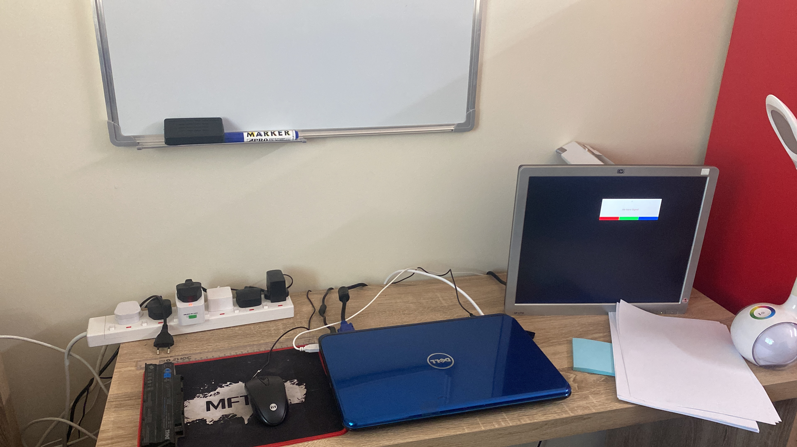

I.T technicalities
Wether on the job or at home, exploring & experimenting
has always been a routine for me. This passion had landed
me a job at a real estate agency for 3 years. And when I am not solving
others' problems either at work or at my social circle, I am at my office solving my own.


With each successful operation. I was able to reinvest in better or more tools to be
able to expand my knowledge.

The cyberspace is a galaxy full of wonder and danger, which is why from time to time I try to
discover the cybersecurity side by practising on permitted boxes with vulnerabilities.

It can be used as a password cracker and to support the blockchain of digital assets. A journey being ridden like
a rollercoaster.